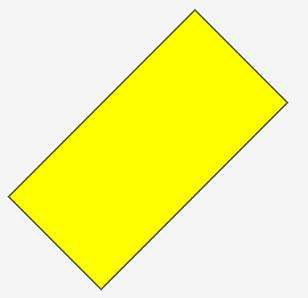

|
类型 |
绘图指令 |
|
描述 |
在指定区域画一个旋转矩形。 此指令支持设置线条宽度、线条类型和填充绘图，但不允许画出自定义控件之外。 此指令只能在自定义元件的绘图函数内使用。请查看自定义元件调用函数参考例程。 |
|
语法 |
DRAWEX_ROTRECT(cx,cy,w,h,angle[, iffill]) cx, cy：旋转矩形中心坐标位置 w, h：旋转矩形宽高 angle：矩形旋转角度，弧度单位，逆时针方向 iffill：是否填充，缺省为0（不填充） 0 - 不填充，非0 - 填充 （注意：后绘制的可能会遮挡前绘制的图，因此选择填充时建议先画填充，后画边框） |
|
适用控制器 |
支持RTHmi（仅支持4系列及以上控制器） |
|
例子 |
例：SET_COLOR(RGB(0,0,0),RGB(0,255,0)) DRAWEX_ROTRECT(150,150,200,100,45*PI/180, 1) '绘制逆时针旋转45弧度的矩形 DRAWEX_ROTRECT(150,150,200,100, 45*PI/180, 0) '绘制逆时针旋转45弧度的矩形边框  |
|
相关指令 |